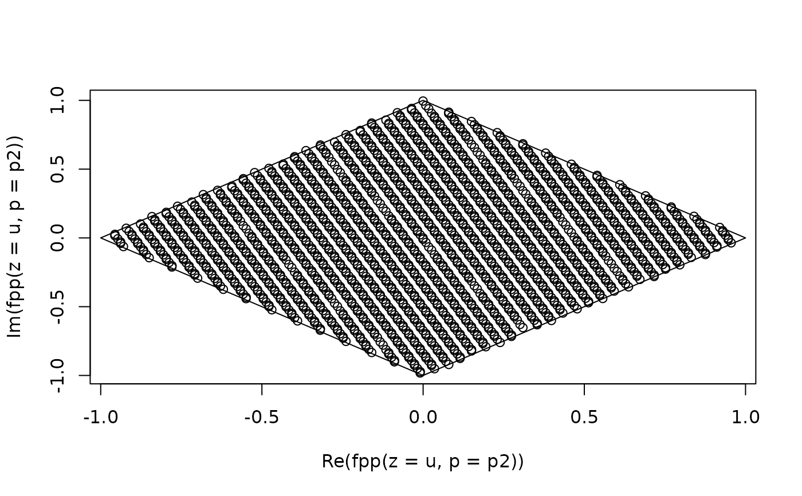

fpp.RdReduce \(z=x+iy\) to a congruent value within the
fundamental period parallelogram (FPP). Function mn() gives
(real, possibly noninteger) \(m\) and \(n\) such that
\(z=m\cdot p_1+n\cdot p_2\).
fpp(z, p, give = FALSE)
mn(z, p)Primary complex argument
Vector of length two with first element the first period and second element the second period. Note that \(p\) is the period, so \(p_1=2\omega_1\), where \(\omega_1\) is the half period
Boolean, with TRUE meaning to return M and N, and
default FALSE meaning to return just the congruent values
Function fpp() is fully vectorized.
Use function mn() to determine the “coordinates” of a
point.
Use floor(mn(z, p)) %*% p to give the complex value of
the (unique) point in the same period parallelogram as z that
is congruent to the origin.
p <- c(1.01+1.123i, 1.1+1.43i)
mn(z=1:10, p) %*% p ## should be close to 1:10
#> [,1]
#> [1,] 1-1.277872e-16i
#> [2,] 2-2.555744e-16i
#> [3,] 3+4.057530e-15i
#> [4,] 4-5.111488e-16i
#> [5,] 5-6.607495e-15i
#> [6,] 6+8.115061e-15i
#> [7,] 7+3.546382e-15i
#> [8,] 8-1.022298e-15i
#> [9,] 9-5.590977e-15i
#> [10,] 10-1.321499e-14i
#Now specify some periods:
p2 <- c(1+1i, 1-1i)
#Define a sequence of complex numbers that zooms off to infinity:
u <- seq(from=0, by=pi+1i*exp(1), len=2007)
#and plot the sequence, modulo the periods:
plot(fpp(z=u, p=p2))
#and check that the resulting points are within the qpp:
polygon(c(-1, 0, 1, 0), c(0, 1, 0, -1))
